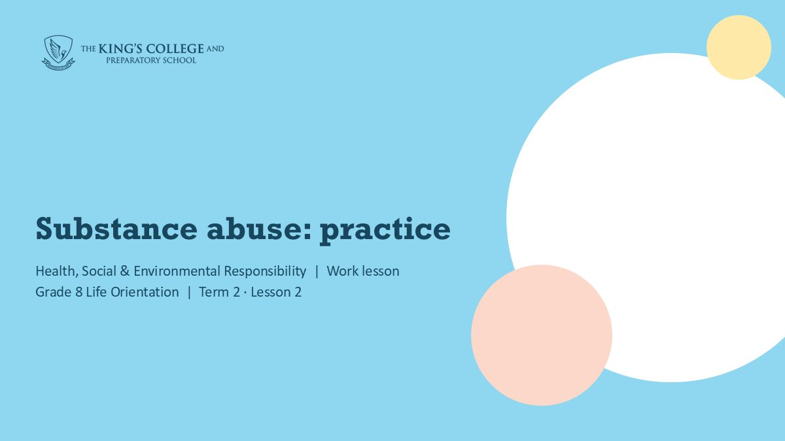

Term 2 · Lesson 2 · Work lesson: written practice
Substance Abuse: Practice
Start Here
Today I Will
- Revise substances, refusal skills and where to get help
- Answer IEB-style questions about a scenario
- Mark my own work and plan how to improve
Quick quiz: name three reasons why teens start using substances. What are four ways to say no?
Words to Know
| Word | Meaning |
|---|---|
| Substance abuse | Using a substance in a harmful way: too much, too often, or when it is illegal for you. |
| Tolerance | Needing more of a substance to feel the same effect. |
| Addiction | Not being able to stop, even though it is harming you. |
| Refusal skills | Ways to say no to pressure clearly and confidently. |
| Assertive | Standing up for yourself calmly, clearly and respectfully. |
| Enabling | Protecting a friend from the results of their substance use (covering for them), which makes it easier for them to carry on. |
Slides

Notes
This lesson revises: Term 2 · Lesson 1: Why people use substances. Read those notes first, then do the written practice.
Say no with confidence, and know who to ask for help.
Written Practice
At a friend's birthday braai, Thabo's cousin Sipho (Grade 11) passes round a mango-flavoured vape. 'Relax, it's just water vapour,' he laughs. 'Everyone at my school does it, and the influencers I follow vape all the time.' Thabo has basketball trials on Saturday and really wants to make the team. Aarav can see that Thabo is unsure. He remembers that his uncle started smoking at 14 and now can't stop, even though he coughs every morning and has spent a fortune on cigarettes.
- 5.1Define the term 'substance abuse'.(1 x 1) (1)
- 5.2Identify TWO social factors in the source that could lead Thabo to try the vape.(2 x 1) (2)
- 5.3Explain why Sipho's claim that a vape is 'just water vapour' is false.(1 x 2) (2)
- 5.4Differentiate between 'tolerance' and 'addiction'.(1 x 2) (2)
- 5.5State TWO short-term consequences that vaping could have for Thabo before his trials.(2 x 1) (2)
- 5.6Recommend TWO assertive ways in which Thabo can refuse the vape. In each answer, also give the result.(2 x 2) (4)
- 5.7Assess how a habit that starts 'just at a party' can affect a teenager in the long term. Refer to Aarav's uncle in your answer.(1 x 4) (4)
- 5.8Name TWO people or organisations a teenager can turn to for help with substance use.(2 x 1) (2)
Finished Early?
Try exam-style questions from the Term 2 exam practice bank.
- Turn to the Term 2 exam practice bank at the back of your Activity Book and find Set A: Substance abuse.
- Answer as many questions as you can in 10 minutes. Use names and details from any scenario.
- Mark your answers in green with the Term 2 exam practice memo on Google Classroom.
- Write one refusal line you would really use if someone offered you a vape.